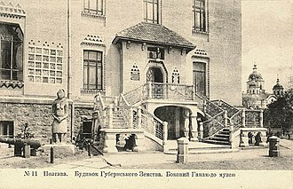
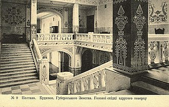

Краєзнавчий музей
Задукоментований вигляд музею на початку 20 століття:


В сорока музейних залах і фондосховищах музею представлено близько 300 тисяч експонатів. Музейна експозиція поділяється на 3 основні розділи: природознавчий, стародавньої історії, нової історії. Кожен розділ має декілька експозиційних залів.
В музеї виставлені колекції народної вишивки, ткацтва, килимарства, церковної атрибутики,
археологічні, нумізматичні, найунікальніші зібрання полтавської писанки XIX-XX століть, давньоєгипетська колекція,
група пам'яток античного і східного мистецтва. Створено експозицію «Унікальні предмети у зібранні
краєзнавчого музею». Діють виставки народного і професійного мистецтва.
В музеї працює близько 150 співробітників, серед них понад 40 науковців.
Головним напрямком роботи музею є науково-дослідна робота — археологічні, етнографічні,
комплексні природознавчі експедиції, розвідки.